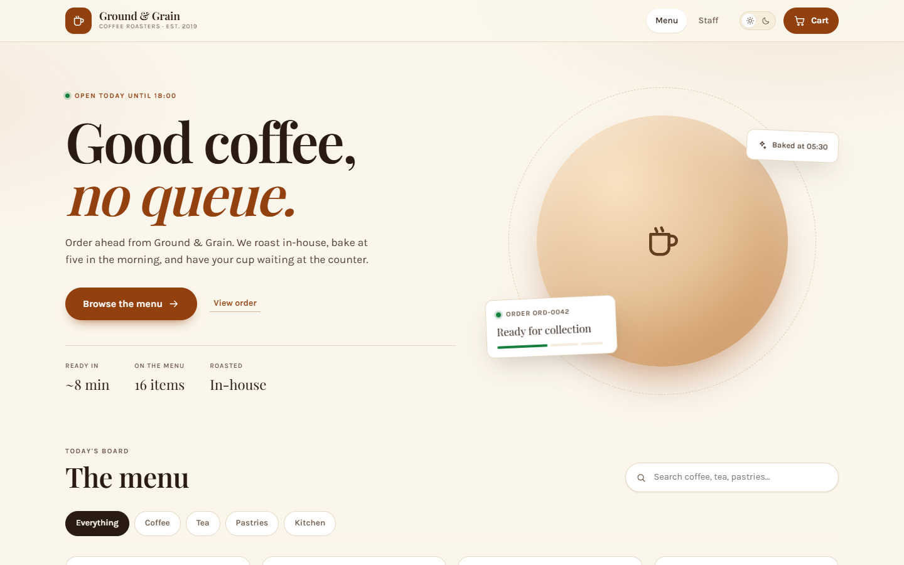
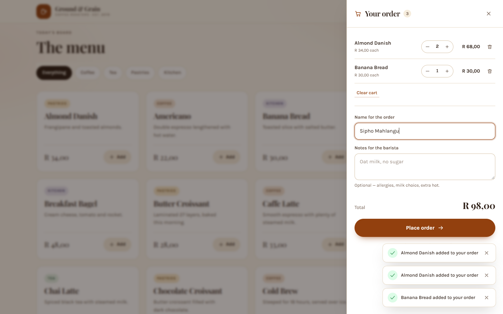
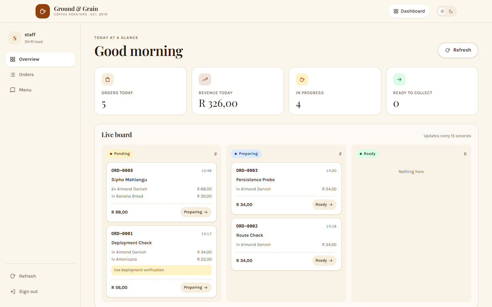
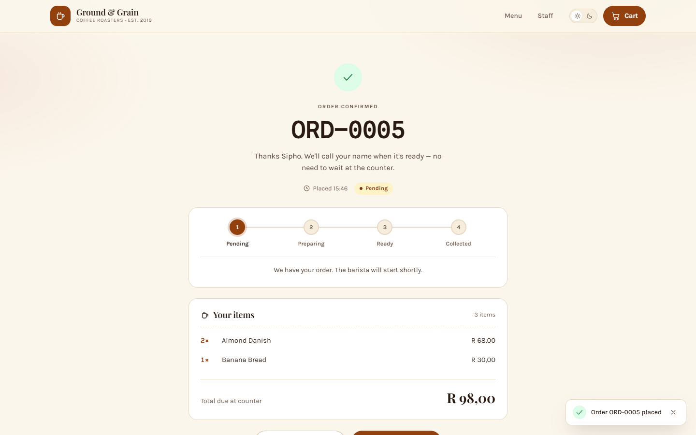
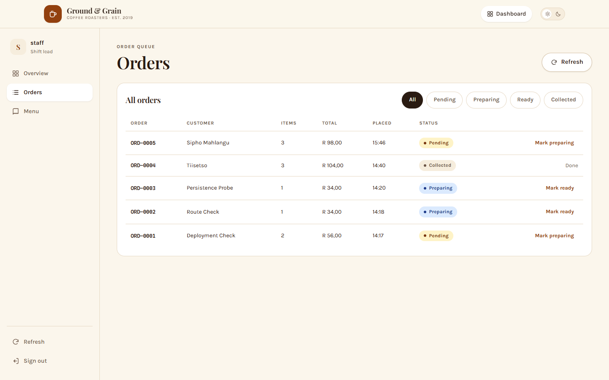
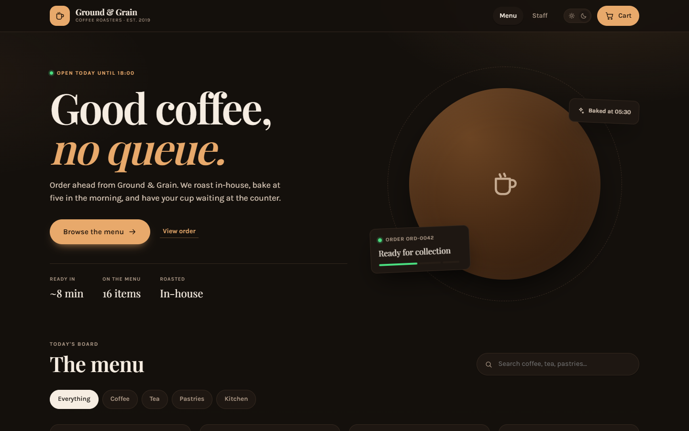
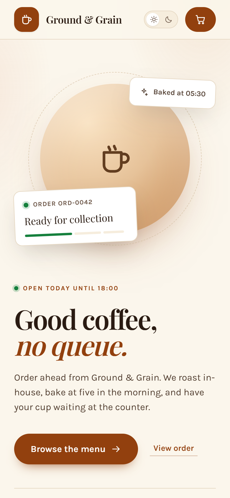

BIWA2110 · Web Application Development
A full-stack ordering and shop-management application built with React, Express, the Fetch API and a key-value NoSQL store — designed, implemented, tested and deployed to the public internet.
We declare that this project is our own original work. All sources, libraries and documentation consulted are acknowledged in the References section. The application, its documentation and its deployment were produced by the group members listed on the cover page, and the contribution of each member is recorded in Appendix D and in the repository history.
| Name and surname | Student number | Signature |
|---|---|---|
Date: ____________________
Campus coffee shops lose time to a queue that exists mainly because ordering is manual: a customer reads a board, queues to speak to a barista, and waits for a paper ticket to be called out. This project replaces that flow with a browser-based system. Customers browse a live menu, build a cart that survives a refresh, place an order and track its progress without reloading the page. Staff sign in to a protected dashboard where they manage the menu, advance orders through a fixed workflow and see the day's revenue as it happens.
The system is a three-tier application. A React single-page application talks to an Express REST API over the Fetch API using JSON and a bearer token. Every menu item and order is stored as a JSON document under a unique key in Redis, with explicit index sets and sorted sets standing in for relational queries. The API is validated with Zod, secured with bcrypt, JWT, Helmet, strict CORS and rate limiting, and covered by ten automated integration tests. Both halves are deployed to free-tier hosting — Vercel for the client, Render for the API, Upstash for the database — and the live system was verified end to end, including accessibility, responsive layouts and a production login that fails closed when the password hash is missing.
Ground & Grain is a small coffee roaster and counter-service café. Its current ordering process is entirely verbal: a customer reads a printed board, queues at the till, gives an order to a barista, and waits for their name to be called. During the morning peak this produces three problems. The queue is longer than the kitchen work it represents, because every order needs a conversation; the board cannot show what has sold out; and nobody can say how much the shop has taken today without adding up a till slip at closing time.
The brief for BIWA2110 asks for a web application that uses a React frontend, an Express REST API, the Fetch API and a key-value NoSQL database. Rather than build a generic CRUD demo, this project applies those technologies to that real operational problem, so every technical decision has a user-facing consequence.
Customers cannot see an accurate, real-time menu without joining a queue, and staff have no single place to manage availability, work orders in sequence or measure the day's takings. The result is avoidable waiting, avoidable errors when an item runs out, and no operational visibility. A browser-based ordering and management system can remove the queue from the critical path: the customer orders from their own phone, and the barista works a queue that is already written down.
The system covers ordering and shop operations, not payment. Orders are collected and paid for at the counter, which is stated in the checkout panel so the customer is never misled. There is one staff account rather than a user-management system: the brief requires staff-only endpoints, and a role model would add a second domain (accounts) without improving the assessed behaviours. Prices are in South African rand and are stored as integer cents. Delivery, email receipts, stock decrementing and supplier ordering are out of scope and are listed as future work in Section 8.
| Member | Student number | Primary responsibility |
|---|---|---|
| Name 1 | 00000000 | Backend API, key-value data model, automated tests |
| Name 2 | 00000000 | Customer experience: menu, cart, confirmation |
| Name 3 | 00000000 | Staff dashboard, authentication, menu management |
| Name 4 | 00000000 | Design system, documentation, deployment |
The ownership map in docs/contributions.md maps each area to specific files so
that the split is verifiable from the repository, and Appendix D records the branch and pull
request evidence.
Two personas drove the design. Thandi, the customer, is on a phone, on campus Wi-Fi, with about ninety seconds to order. She needs to see what is available, know the price before committing, and be confident the order went through. Sipho, the barista-manager, is behind a counter with wet hands and a queue in front of him. He needs large tap targets, an obvious next action per order, and the ability to mark something sold out the moment it runs out. A third, indirect stakeholder is the owner, who wants the day's revenue without adding up slips.
| ID | Requirement | Implementation |
|---|---|---|
| FR-01 | Customers can view the menu grouped by category, with name, description, price and availability. | GET /api/menu; MenuPage.jsx |
| FR-02 | Customers can search by name or description and filter by category. | Client-side filter over the fetched menu |
| FR-03 | Sold-out items cannot be added to the cart. | Disabled control + server-side 409 ITEM_UNAVAILABLE |
| FR-04 | The cart survives a page refresh and supports quantity changes and removal. | CartContext.jsx with localStorage |
| FR-05 | Checkout requires a customer name, accepts an optional note, and validates inline. | CartDrawer.jsx; Zod on the server |
| FR-06 | Each order receives a unique, human-readable number. | counter:order with INCR → ORD-0001 |
| FR-07 | The confirmation page shows the order and tracks status changes without a reload. | ConfirmPage.jsx, 10-second polling of GET /api/orders/:id |
| FR-08 | Staff can sign in and every write endpoint requires a valid token. | POST /api/auth/login; requireStaff middleware |
| FR-09 | Staff can create, edit and delete menu items and toggle availability. | Menu CRUD routes; Menu tab |
| FR-10 | Deleting an item that appears in an open order is refused. | 409 ITEM_IN_USE guard in the menu repository |
| FR-11 | Staff can advance an order through pending → preparing → ready → collected. | PATCH /api/orders/:id/status, forward-only |
| FR-12 | Staff can filter orders and see a live three-column board. | Orders tab; Overview board |
| FR-13 | Staff can see orders today, revenue today, work in progress and ready to collect. | GET /api/orders/summary/today |
| FR-14 | The system reports its own health, including the database driver. | GET /api/health → 200 or 503 |
| ID | Quality attribute | Target and how it is met |
|---|---|---|
| NFR-01 | Usability | Order placed in four interactions from the menu; no page reload at any step; inline validation instead of alert dialogs. |
| NFR-02 | Accessibility | WCAG 2.2 AA contrast (22/22 checks pass, lowest 6.47:1), visible focus, full keyboard operation, focus trap in dialogs, aria-live for totals, prefers-reduced-motion honoured. |
| NFR-03 | Responsiveness | One layout from 360 px to 1440 px; verified at 390 px, 768 px and 1440 px. |
| NFR-04 | Performance | Production bundle 211 kB JavaScript (67 kB gzip) and 38 kB CSS (8 kB gzip); no client-side framework beyond React and the router. |
| NFR-05 | Security | bcrypt password hash, JWT with expiry, Helmet headers, CORS allowlist, 10 login attempts per 15 minutes, 20 orders per 10 minutes, 32 kB JSON body cap. |
| NFR-06 | Reliability | Durable Redis persistence; multi-key writes are atomic; health endpoint checks the store; API restarts do not lose data. |
| NFR-07 | Maintainability | Layered server (routes → repositories → store), one fetch wrapper on the client, design tokens instead of hard-coded colours, 10 automated tests. |
| NFR-08 | Portability | Two interchangeable store drivers (Redis and JSON file) behind one interface; runs locally with no database installed. |
| NFR-09 | Cost | Zero cost: Vercel Hobby, Render free web service, Upstash free Redis. |
| User story | Acceptance criteria |
|---|---|
| As a customer, I want to see what is available and what it costs before I order. | Menu loads in under two seconds on a warm API; each card shows name, description, price and availability; sold-out items are visually distinct and cannot be added. |
| As a customer, I want to change my mind about quantities without losing my cart. | Quantity steppers update the line and the total immediately; refreshing the page preserves the cart; removing the last line shows an empty state. |
| As a customer, I want proof that my order reached the kitchen. | Checkout returns a unique ORD- number; the confirmation page is a real URL that can be reloaded or shared; it shows the current status. |
| As a barista, I want to mark an item sold out the moment it runs out. | Availability switch in the Menu tab saves immediately; the customer menu reflects it on the next load; ordering it returns 409. |
| As a barista, I want the next action on an order to be obvious. | Each order shows one primary status button; illegal transitions are rejected by the server; the board moves the card between columns. |
| As the owner, I want today's takings without adding up slips. | Overview shows order count, revenue, in-progress and ready counts; the figures come from a server-side daily summary, not the browser. |
The application is a conventional three-tier system with a hard boundary between browser and data. The React bundle is static and can be served from any CDN; the API is the only component that holds credentials; the database is reachable only from the API.
┌───────────────────────────────┐
│ React SPA · Vercel │
│ menu · cart · confirmation │
│ staff login · dashboard │
└──────────────┬────────────────┘
│ Fetch API · JSON · Bearer JWT
▼
┌───────────────────────────────┐
│ Express REST API · Render │
│ /api/menu /api/orders │
│ /api/auth /api/health │
│ Zod · Helmet · CORS · limits │
└──────────────┬────────────────┘
│ ioredis (TLS)
▼
┌───────────────────────────────┐
│ Key-value store · Upstash │
│ menu:item:{id} → JSON │
│ order:{id} → JSON │
│ index sets + sorted sets │
└───────────────────────────────┘
The split is not cosmetic. It means the client can be rebuilt and redeployed without touching data, the API can be scaled or replaced without changing the UI contract, and the database credentials exist in exactly one place. It also means every rule that matters — totals, availability, status transitions, authorisation — is enforced where the user cannot edit it.
The client is a single-page application built with React 18 and Vite 6. Routing uses
react-router-dom with four routes: / for the menu,
/order/:id for confirmation, /staff/login and /staff.
Confirmation is a real URL rather than a modal state so that a customer can reload it, and
so that the order can be reopened later.
State is split by lifetime. CartContext owns cart lines and persists them to
localStorage; AuthContext owns the staff token and clears it on a
401; ToastContext owns transient feedback. Everything else is
local component state. A single api.js wrapper performs every request, attaches
the bearer token when present, parses the error envelope and throws a typed error, so no
component contains fetch boilerplate or invents its own error handling.
The server is layered so that HTTP concerns never leak into data access. Routes validate and
translate; repositories own the key layout and the business rules; store drivers implement a
small common interface (get, set, del,
sadd, srem, smembers, zadd,
zrange, hincrby, incr, multi). That
interface is what makes the JSON-file fallback possible: the same repositories run against
Redis in production and a file on a laptop, with no conditional logic in business code.
A key-value store has no WHERE clause, so every listing has to be anticipated at
write time. The design uses one document key per entity and a small number of explicit
indexes, each written in the same transaction as the document it describes.
| Key | Type | Purpose |
|---|---|---|
menu:item:{id} | String (JSON) | The menu item document. |
menu:index | Set | Every menu item id; the source for GET /api/menu. |
menu:category:{cat} | Set | Item ids per category, for filtered reads. |
order:{id} | String (JSON) | The order, including snapshotted line prices. |
orders:index | Sorted set | Order ids scored by creation time, newest first. |
orders:status:{status} | Set | Order ids per status, for the board and filters. |
orders:day:{YYYY-MM-DD} | Set | Order ids per day. |
stats:day:{YYYY-MM-DD} | Hash | orderCount and revenueCents, incremented atomically. |
counter:order | Integer | INCR source for ORD-0001 numbers. |
MULTI. A crash cannot leave an order that exists but is missing from the board.KEYS * is never used. Every listing goes through an index, so read cost grows with the result size rather than the database size.
Prices are integer cents throughout (priceCents). Floating-point cents accumulate
error: 0.1 + 0.2 !== 0.3 in JavaScript. Totals are therefore computed in integers
on the server and formatted only at the edge, in one Intl.NumberFormat call.
The API is resource-oriented and returns JSON for everything except 204. Twelve
endpoints cover the whole system (Appendix A has request and response examples). Every error
uses the same envelope, so the client has exactly one error path:
{
"error": {
"code": "VALIDATION_ERROR",
"message": "Some fields are invalid",
"details": [{ "field": "priceCents", "message": "Price must be at least R0.50" }]
}
}
Status codes carry meaning rather than being uniformly 400: 401 for
a missing or invalid token, 403 CORS_BLOCKED for an origin that is not allowed,
404 for an unknown id, 409 for a state conflict
(INVALID_TRANSITION, ITEM_UNAVAILABLE, ITEM_IN_USE),
and 503 from health when the store is unreachable. The client can therefore
distinguish "you are not signed in" from "this item is gone" without parsing prose.
┌─────────┐ ┌───────────┐ ┌───────┐ ┌───────────┐
│ pending │ → │ preparing │ → │ ready │ → │ collected │
└─────────┘ └───────────┘ └───────┘ └───────────┘
└──────────── any other transition → 409 INVALID_TRANSITION
The workflow is forward-only and enforced in the repository, not in React. A disabled button
is a convenience; the server rule is the guarantee. Skipping a step, or moving backwards,
returns 409 with the current and requested status in the message, which makes a
stale dashboard tab fail safely instead of corrupting the queue.
| Control | Implementation |
|---|---|
| Password storage | bcrypt hash (STAFF_PASSWORD_HASH), cost 10; the plaintext password never exists on the server. |
| Session | Signed JWT carrying { sub, role: "staff" }, 8-hour expiry, verified on every protected request. |
| Authorisation | requireStaff on every write route; public reads are limited to the menu, order tracking and health. |
| Transport and headers | HTTPS everywhere; Helmet sets X-Content-Type-Options, frame and referrer policy, and removes X-Powered-By. |
| CORS | Explicit origin allowlist from FRONTEND_URL; unknown origins receive 403 CORS_BLOCKED. |
| Rate limiting | Login 10 / 15 min per IP; order creation 20 / 10 min; global 300 / 15 min. |
| Input limits | JSON body capped at 32 kB; every write validated by a Zod schema with length and range bounds. |
| Fail closed | In production, an unset STAFF_PASSWORD_HASH disables login instead of falling back to a known default. This was verified with a live 401. |
The last row is a deliberate reversal of the usual demo-friendly default. A misconfigured
deployment should be unusable by staff, not open to anyone who has read the source. The
development fallback remains for local work but is gated on NODE_ENV !== "production".
The interface is built from a design system recorded in
design-system/ground-and-grain/MASTER.md, with per-page overrides for the menu,
cart and dashboard. Every colour, space, radius and motion value is a CSS custom property in
tokens.css; components never hard-code a hex value. That is what makes the dark
theme a token swap rather than a second stylesheet.
| Element | Decision |
|---|---|
| Palette | Warm brown #92400E on cream #FBF6EC, with a full dark counterpart. Brown reads as coffee without the cliché of pure black; cream lowers glare under counter lighting. |
| Typography | Playfair Display for display headings, Karla for body and controls, system mono for order numbers. Order numbers are data, so they get a face where 0 and O are unambiguous. |
| Layout | Maximum content width with a 12-column rhythm; the dashboard runs denser than the customer surface because it is scanned, not read. |
| Motion | Short (120–220 ms) transitions on state change only; all disabled under prefers-reduced-motion. |
| Feedback | Skeletons on first load, silent background refreshes afterwards, inline field errors, and a toast for actions that leave the screen. |
| Accessibility | Semantic landmarks, labelled controls, visible focus ring, focus trap and Escape in dialogs, aria-live for cart totals and status, 44 px minimum targets. |


| Layer | Choice | Why this and not the alternative |
|---|---|---|
| Frontend | React 18 + Vite 6 | Component model fits a menu/cart/dashboard split; Vite gives sub-second HMR and a 211 kB production bundle without a framework runtime. |
| Routing | react-router-dom 6 | The confirmation page must be a real URL. A single-page state machine would break reloads and sharing. |
| Styling | Hand-written CSS with tokens | No utility-class churn and no build step for styles; the design system is readable by a marker. |
| Backend | Express 4 (ESM) | Minimal ceremony for twelve endpoints, and the middleware model maps cleanly onto auth, validation and errors. |
| Validation | Zod 3 | One schema per write, machine-readable issues that become the details array without hand-written branching. |
| Auth | JWT + bcryptjs | Stateless sessions suit a single free-tier instance; bcrypt is deliberately slow, which is the point. |
| Database | Redis via ioredis | Key-value as required, with atomic MULTI, sets and sorted sets — enough structure to avoid scanning. |
| Testing | Vitest + Supertest | Tests run against the real Express app and a real file store, in about 4.6 seconds. |
The application is created by a factory, createApp({ store, config }), rather than
at import time. That one decision is what makes the API testable: a test can construct an app
with a temporary file store and a test configuration, with no ports, no environment variables
and no shared state between tests.
Order creation is the most delicate operation. The client sends item ids and quantities only; the server re-reads every item, rejects unavailable ones, recomputes the total from the current price, snapshots that price onto each line, allocates the next order number and writes the document plus four indexes in one transaction:
const orderNumber = `ORD-${String(await store.incr('counter:order')).padStart(4, '0')}`;
const multi = store.multi();
multi.set(`order:${id}`, JSON.stringify(order));
multi.zadd('orders:index', createdAtMs, id);
multi.sadd(`orders:status:${order.status}`, id);
multi.sadd(`orders:day:${day}`, id);
multi.hincrby(`stats:day:${day}`, 'orderCount', 1);
multi.hincrby(`stats:day:${day}`, 'revenueCents', order.totalCents);
await multi.exec();
The total is never taken from the request. A test sends totalCents: 1 alongside two
items priced at R30 and asserts that the stored total is 6000 cents — the server ignores the
client's arithmetic entirely. The same rule protects the daily summary: it is incremented
inside the transaction, so it cannot drift from the orders it describes.
Deletion has a similar guard. Before removing an item, the repository checks the open-order
indexes for any order that references it. If one exists, the request fails with
409 ITEM_IN_USE rather than leaving a receipt that points at a menu item that no
longer exists.
The cart is the piece users notice. Lines are stored as
{ itemId, name, priceCents, qty } in localStorage and rehydrated on
boot, so a refresh, a phone call or a accidental back-navigation does not lose an order. The
displayed total is computed from those lines, but it is a convenience: the authoritative total
is the one the server returns.
The confirmation page polls GET /api/orders/:id every ten seconds and stops when
the order is collected. Polling was chosen over WebSockets deliberately: the data changes at
human speed, the free-tier API may sleep, and a ten-second interval is one request per order
per ten seconds rather than a permanently open connection. A failed poll is silent and retried
on the next tick; only the first load can show an error.
The dashboard follows the same pattern: a skeleton on first load, then silent background
refreshes every fifteen seconds so the board stays current without flashing. A 401
from any request clears the token and returns the user to the login screen, which is handled
once in AuthContext rather than in each page.
There are three layers and each has one job. Zod produces field-level messages for the form.
The API translates domain conflicts into typed codes with meaningful status codes. The client
normalises everything into an ApiError carrying code,
message and details, then renders it either inline (field errors), as
a banner (page-level failures) or as a toast (background action failures). No component
inspects response.ok or parses a message string.
During acceptance testing, typing a single character into the "Add menu item" dialog moved
focus to the close button, so the next keystroke dismissed the form. The visible symptom looked
like a state bug; the cause was an effect dependency. The modal's useEffect listed
onClose, and the parent passed an inline arrow, so every keystroke created a new
function, tore down the effect (whose cleanup restored focus to the trigger) and re-ran its
setup (which focused the first focusable element — the X button, which precedes the form in DOM
order).
The fix was to keep the callback in a ref and depend only on open, so the effect
runs once per open/close cycle. Focus now lands on the first form field, and a Tab trap keeps
keyboard users inside the dialog. The same pattern was applied to the cart drawer. A
seven-check browser test now covers focus on open, full-word typing, focus retention, modal
persistence, Shift+Tab wrapping, Escape and the cart name field.
The system is 5,466 lines across 36 source files: 2,053 lines of JavaScript and JSX on the
client, 2,358 lines of CSS, 924 lines on the server and 131 lines of tests. There is no dead
dependency and no unused route. Naming follows the domain (priceCents,
orderNumber, byStatus), the server is layered so that a change to
Redis never reaches a route, and the client has one place for requests, one for formatting and
one for each context.
Commits are small and scoped: scaffold, deployment, documentation, the credentials fix, and the focus fix. Each message states the intent, and the diff for the focus fix is two files — the smallest change that addresses the cause rather than the symptom.
Testing follows the shape of the risk. Business rules that can lose money or corrupt state — totals, availability, transitions, deletion guards — are covered by automated integration tests that exercise the real Express app against a real store. Flows that depend on the browser — focus, keyboard navigation, responsive layout, polling — were verified with scripted end-to-end checks in a real Chromium browser against both the local and the deployed build. Visual and accessibility checks were run on the deployed site, because that is what a marker will open.
Ten tests run in server/test/api.test.js with Vitest and Supertest. Each test gets a
fresh temporary file store, so there is no ordering dependency and no shared state.
| # | Test | What it proves |
|---|---|---|
| 1 | Health reports the store driver | The health endpoint is wired to the real store and reports ok with the driver name. |
| 2 | Lists seeded items publicly | The menu is readable without a token and returns the stored items. |
| 3 | Rejects writes without a token | Authorisation is enforced server-side, not hidden in the UI. |
| 4 | Validates the payload | Bad name, negative price and unknown category produce 400 VALIDATION_ERROR with field details. |
| 5 | Returns 404 for an unknown item | Missing resources are distinguished from validation failures. |
| 6 | Recomputes totals from server prices | A client-supplied total of 1 cent is ignored; two R30 items store 6000 cents. |
| 7 | Rejects an unavailable item | Availability is enforced at order time with 409 ITEM_UNAVAILABLE. |
| 8 | Enforces forward-only transitions | pending → collected fails with 409; pending → preparing succeeds. |
| 9 | Blocks deleting an item in an open order | The delete guard returns 409 ITEM_IN_USE. |
| 10 | Returns a daily summary | Order count, revenue and per-status counts are correct after an order. |

✓ test/api.test.js (10 tests) 466ms
Test Files 1 passed (1)
Tests 10 passed (10)
Duration 4.65s
Full output in Appendix C. The suite was re-run after every change, including the credentials and focus fixes.
These were executed against the deployed application in Chromium, not against a mock. Each row is a real interaction with real data.
| # | Scenario | Observed result |
|---|---|---|
| 1 | Load the menu cold | 16 items in four categories; skeleton replaced by content; no console errors. |
| 2 | Search for "flat" | Only matching items remain; clearing restores the full menu. |
| 3 | Add two items and change quantity | Badge and total update immediately; stepper respects the maximum. |
| 4 | Refresh with a populated cart | Cart survives, badge and total restored from localStorage. |
| 5 | Checkout without a name | Inline error, focus moved to the name field, no request sent. |
| 6 | Place a valid order | Navigates to /order/{id}; unique ORD- number; tracker shows pending. |
| 7 | Reload the confirmation URL | Same order renders; deep link resolves through the Vercel rewrite. |
| 8 | Sign in with the staff password | 200, token stored, dashboard loads. |
| 9 | Sign in with a wrong password | 401 with a message that does not reveal which field was wrong. |
| 10 | Advance an order | Board card moves column; customer page updates on its next poll; summary revenue unchanged. |
| 11 | Create a menu item | Appears in the Menu tab and on the customer menu after refresh. |
| 12 | Type in the add-item dialog | Full word typed, focus stays in the field, modal remains open (regression test after the fix). |
The target was WCAG 2.2 AA. Contrast was measured on the rendered tokens rather than assumed: 22 of 22 foreground/background pairs pass, with the lowest ratio 6.47:1 against a 4.5:1 requirement for body text. Beyond contrast:
aria-live="polite", so a screen reader announces changes without stealing focus.aria-label; decorative icons are aria-hidden.aria-describedby.aria-pressed, and motion is disabled under prefers-reduced-motion.The layout was checked at 390 × 844, 768 × 1024 and 1440 × 900. On a phone the menu becomes a single column, the cart becomes a full-height sheet, and the dashboard board stacks vertically. The app was exercised in Chromium (Edge) with no console errors; because it uses only standard CSS and ES2020 features, it runs unchanged in current Chrome, Firefox and Safari.
| Asset | Size | Gzip |
|---|---|---|
index-*.js | 211.12 kB | 67.19 kB |
index-*.css | 37.73 kB | 7.96 kB |
index.html | 1.70 kB | 0.89 kB |
There is no client-side state library, no UI kit and no icon package: icons are inline SVG
components, and the only runtime dependencies are React, React DOM and the router. Fonts are
loaded with display=swap so text is readable before the display face arrives.
Images are served by the CDN and are absent from the critical path.
| Check | Result |
|---|---|
| Protected endpoint without a token | 401 UNAUTHORIZED |
| Login with a wrong password | 401 INVALID_CREDENTIALS, no field disclosure |
| Request from an origin not in the allowlist | 403 CORS_BLOCKED |
| Illegal status jump | 409 INVALID_TRANSITION |
| Delete an item used by an open order | 409 ITEM_IN_USE |
Production boot without STAFF_PASSWORD_HASH | Login refused with 401; a warning is logged; the known development password is rejected |
| Oversized JSON body | Rejected at 32 kB by the body parser |
| Credential material in the client bundle | No password, hash or demo hint present in the production bundle |
| ID | Defect | Severity | Resolution |
|---|---|---|---|
| D-01 | Demo credentials displayed on the login screen and documented in the README. | High (security) | Hint removed, docs rewritten to require a hash, production fallback disabled and verified with a live 401. |
| D-02 | Menu-item dialog lost focus after the first character, so the next keypress closed it. | High (usability) | Effect now depends only on open; focus goes to the first field; Tab trap added; 7-check regression test. |
| D-03 | API rejected the deployed frontend with 403 CORS_BLOCKED. | Medium (deployment) | FRONTEND_URL set to the exact Vercel origin; documented in DEPLOY.md. |
| Component | Host | URL / configuration |
|---|---|---|
| Frontend | Vercel Hobby | https://coffee-shop-omega-lovat.vercel.app — root client, npm run build, output dist |
| API | Render Free Web Service | https://ground-and-grain-api.onrender.com — root server, npm ci → npm start |
| Database | Upstash Redis Free | rediss://…upstash.io:6379, TLS, set only on Render |
| Source | GitHub | https://github.com/kabelomoshe881-design/coffee-shop |
| Variable | Where | Value / purpose |
|---|---|---|
VITE_API_URL | Vercel | The Render API base URL. Baked at build time, so changing it requires a redeploy. |
NODE_ENV | Render | production — enables strict CORS and fail-closed auth. |
REDIS_URL | Render | Upstash TLS connection string. |
FRONTEND_URL | Render | Exact Vercel origin; must match character for character. |
JWT_SECRET | Render | Long random string; rotating it invalidates all staff sessions. |
STAFF_USERNAME | Render | staff. |
STAFF_PASSWORD_HASH | Render | bcrypt hash generated locally with npm run hash. Required in production. |
AUTO_SEED | Render | Defaults to on; seeds 16 items the first time the API boots against an empty database. |
rediss:// connection string.server. The included render.yaml blueprint creates it with the right build and start commands./api/health returns 200 with "driver":"redis".client, and set VITE_API_URL.client/vercel.json for Vercel and client/public/_redirects for Netlify.
Both hosts are connected to main. A push triggers a Vercel build and a Render
deploy; there is no manual upload step and no build artefact in the repository. Because the
client reads VITE_API_URL at build time, the environment variable and the build
are one unit: changing the API URL means committing nothing and pressing redeploy.
| Constraint | Mitigation |
|---|---|
| Render sleeps after about 15 minutes of inactivity; the first request can take up to a minute. | The UI shows a skeleton and a retry action rather than a blank screen. Warm the health URL before a demo. Documented in the README. |
| Single API instance, no horizontal scaling. | All state is in Redis; the API is stateless apart from the JWT secret, so a restart loses nothing. |
| Ephemeral local disk on the host. | The file driver is explicitly development-only; production uses Redis, and health reports the driver so a misconfiguration is visible. |
| Upstash free command and storage quotas. | Indexes avoid KEYS * and every read is proportional to the result, not the database. |
The deployed system was verified after the final deployment, not assumed from a local build:
| Check | Result |
|---|---|
GET /api/health | 200, "driver":"redis", "ok":true |
| Menu from the deployed API | 16 items |
| Order created through the deployed UI | 201, unique ORD- number, confirmation route loads on reload |
| Staff login on the deployed API | 200, token issued |
| Staff dashboard with live data | Orders listed, status advanced, summary revenue correct |
| Production bundle inspection | No demo hint, no password, no hash |
| Console during the full flow | Zero errors |
| Persistence across requests | Order counter incremented and survived subsequent requests |
The first deployment returned 403 CORS_BLOCKED even though the frontend URL
"looked right". Origins are compared as exact strings: a trailing slash, http
instead of https, or a preview domain is a different origin. The fix was to set
FRONTEND_URL to the canonical Vercel domain, with no trailing slash, and to log
the rejected origin so the next person does not have to guess. This is now the first entry in
the deployment troubleshooting section.
Vite inlines VITE_* at build time. Editing the variable in the Vercel dashboard
changes nothing until the project is rebuilt. We lost time to a build that pointed at
localhost because the variable was added after the deployment. The README now
states this explicitly, and the deployment procedure treats the variable and the redeploy as a
single step.
The instinct from relational databases is to fetch everything and filter in the application. That works at sixteen menu items and fails at sixteen thousand orders. The design forces every access path to be named in advance: an index per status, per day and per category, plus a sorted set for recency. The benefit is not academic — the board, the orders table and the summary are all index reads, and none of them scan the keyspace.
The dialog bug in Section 4.5 is the clearest lesson of the project. React compares
dependencies by identity, and an inline arrow is a new function on every render. The bug was
invisible in code review and obvious in a browser; it was found by reproducing the exact user
action, not by reading the component. The fix is three lines of intent (a ref, an
[open] dependency, a focus selector) and one regression test. The general rule we
took away: an effect that manipulates focus must run once per open, never once per render.
The original build shipped a demo password so that the project "just worked". That is
convenient for a marker and unacceptable for a deployed system: it puts a working credential in
the bundle and in the README. Removing it meant changing the documentation, the login screen,
the CSS and the server fallback, and then proving the fallback was gone by booting in
production mode without a hash and watching the login return 401. The lesson is
that a secure default is worth more than a convenient one, and that "it works on my machine"
is not evidence.
A free Render service sleeps, and a sleeping API looks like a broken application. Rather than hide that, the UI treats the first request as potentially slow: skeletons, a retry action and no spinner that runs forever. The deployment guide tells the presenter to warm the health endpoint a minute before the demo. Operational honesty is part of the design.
During development a database connection string and a staff password were shared in a chat
window. Both were rotated: the password was replaced by a new bcrypt hash and the connection
string was regenerated in Upstash. The repository contains no .env file, only an
.env.example with empty secrets, and .gitignore covers the local
environment and the file database. This is recorded here deliberately: handling a leak
correctly is part of the engineering, not an embarrassment to hide.
The project delivers a working, deployed coffee shop system rather than a prototype. A customer can browse a live menu, build a persistent cart, place an order in four interactions and watch it progress to collection. A barista can sign in, manage availability, work a forward-only queue and see the day's revenue without touching a calculator. Every rule that protects money or state is enforced on the server, every input is validated, and the whole system runs on free infrastructure with durable storage.
The objectives in Section 1.3 were met. The nine functional areas are demonstrated in the screenshots and the live URLs; the ten automated tests pass; accessibility was measured rather than asserted; and the production deployment was verified with the same flows a marker will use. The two defects found late — the visible demo password and the self-closing dialog — were fixed at the cause, covered by tests, and documented here.
| Enhancement | Why it matters and how it would be built |
|---|---|
| Multiple staff accounts and roles | Barista versus manager permissions; a staff:{id} document, a role claim in the JWT and a permission check per route. |
| Payment | Card or wallet payment at checkout; a payment intent created server-side and a webhook that moves the order to paid, keeping the API as the source of truth. |
| Notifications | Email or SMS when an order is ready; a queue worker and a provider webhook, triggered by the status transition. |
| Stock control | Decrement ingredient quantities per sale and mark items unavailable automatically at zero; the transaction already exists, so this is an extension of it. |
| Analytics | Revenue by hour and best-selling items; the daily hash is the seed, with a monthly rollup key. |
| Offline-first customer app | A service worker and an IndexedDB queue so an order can be composed on a weak connection and sent when it returns. |
| Automated end-to-end tests in CI | Run the Playwright/Puppeteer flows on every pull request, with a disposable Redis container. |
| Image uploads | Object storage with signed uploads; the menu document stores a URL, never binary data. |
The most valuable outcome was not the feature list but the discipline the constraints imposed. A key-value store forced the data model to be designed rather than discovered. A free tier forced the UI to be honest about latency. A single staff account forced authorisation to be explicit. And a bug that only appeared when a human typed into a form was a reminder that automated tests verify behaviour you thought of, while acceptance testing finds the behaviour you did not.
| Method | Endpoint | Auth | Success / notable errors |
|---|---|---|---|
| GET | /api/health | public | 200 with driver and uptime; 503 if the store is down |
| GET | /api/menu | public | 200, all items |
| GET | /api/menu/:id | public | 200; 404 NOT_FOUND |
| POST | /api/menu | staff | 201; 400 VALIDATION_ERROR; 401 |
| PUT | /api/menu/:id | staff | 200; 400; 404 |
| DELETE | /api/menu/:id | staff | 204; 409 ITEM_IN_USE |
| GET | /api/orders | staff | 200; 401 |
| GET | /api/orders/summary/today | staff | 200 with count, revenue and by-status |
| GET | /api/orders/:id | public | 200; 404 |
| POST | /api/orders | public | 201; 400; 409 ITEM_UNAVAILABLE; 429 |
| PATCH | /api/orders/:id/status | staff | 200; 409 INVALID_TRANSITION |
| POST | /api/auth/login | public | 200 with token; 401; 429 |
POST /api/orders
Content-Type: application/json
{
"customerName": "Thabo",
"note": "Oat milk, no sugar",
"items": [
{ "itemId": "290f804a-02a3-4d04-ac03-e9c9e8915402", "qty": 2 }
]
}
201 Created
{
"data": {
"id": "a4366e9c-b0be-47e9-899c-ef86a0d8f125",
"orderNumber": "ORD-0007",
"customerName": "Thabo",
"status": "pending",
"totalCents": 4400,
"items": [
{ "itemId": "290f804a-…", "name": "Americano", "priceCents": 2200, "qty": 2 }
],
"createdAt": "2026-11-10T13:48:00.000Z"
}
}
PATCH /api/orders/a4366e9c-…/status
Authorization: Bearer <token>
{ "status": "ready" }
409 Conflict
{
"error": {
"code": "INVALID_TRANSITION",
"message": "Cannot move an order from \"pending\" to \"ready\". The next step is \"preparing\"."
}
}
menu:item:{uuid} String (JSON) { id, name, description, priceCents,
category, available, createdAt, updatedAt }
menu:index Set all menu item ids
menu:category:{category} Set item ids for one category
order:{uuid} String (JSON) { id, orderNumber, customerName, note,
status, items[], totalCents,
createdAt, updatedAt }
orders:index Sorted set order id scored by createdAt (ms)
orders:status:{status} Set order ids in one status
orders:day:{YYYY-MM-DD} Set order ids created that day
stats:day:{YYYY-MM-DD} Hash { orderCount, revenueCents }
counter:order Integer INCR source for ORD-0001
{
"id": "a4366e9c-b0be-47e9-899c-ef86a0d8f125",
"orderNumber": "ORD-0007",
"customerName": "Thabo",
"note": "Oat milk, no sugar",
"status": "pending",
"items": [
{ "itemId": "290f804a-…", "name": "Americano",
"priceCents": 2200, "qty": 2 }
],
"totalCents": 4400,
"createdAt": "2026-11-10T13:48:00.000Z",
"updatedAt": "2026-11-10T13:48:00.000Z"
}
| Operation | Keys touched |
|---|---|
| Create menu item | menu:item:{id}, menu:index, menu:category:{cat} |
| Update item category | Document, old category set (remove), new category set (add) |
| Delete item | Document and both indexes, after the open-order guard |
| Create order | Document, orders:index, orders:status:pending, orders:day:{d}, stats:day:{d}, counter:order — in one MULTI |
| Advance status | Document, old status set (remove), new status set (add) |
Command: cd server && npm test — Vitest 2.1.8, Node 24.20.0, Windows.
RUN v2.1.8 C:/Users/HP/projects/coffee-shop/server
✓ test/api.test.js (10 tests) 466ms
✓ health > reports the store driver
✓ menu > lists seeded items publicly
✓ menu > rejects writes without a token
✓ menu > validates the payload
✓ menu > returns 404 for an unknown item
✓ orders > recomputes totals from server prices
✓ orders > rejects an unavailable item
✓ orders > enforces forward-only status transitions
✓ orders > blocks deleting an item used by an open order
✓ orders > returns a daily summary
Test Files 1 passed (1)
Tests 10 passed (10)
Start at 15:47:36
Duration 4.65s
Recorded against the deployed API on 10 November 2026. Full transcript in evidence/api-evidence.txt.
200 GET /api/health driver=redis, ok=true 200 GET /api/menu 16 items 400 POST /api/orders validation failure (no items) 401 GET /api/orders no bearer token 401 POST /api/auth/login wrong password 200 POST /api/auth/login token issued 201 POST /api/orders order created 200 GET /api/orders with staff token 200 GET /api/orders/summary/today daily totals 409 PATCH /api/orders/:id/status pending -> ready refused 200 PATCH /api/orders/:id/status pending -> preparing 200 GET /api/orders/:id public tracking
The ownership map below is taken from docs/contributions.md. Each area maps to real
files, so the split can be checked against the repository rather than accepted on trust.
| Member | Student number | Primary ownership | Files |
|---|---|---|---|
| Name 1 | 00000000 | Backend API and data model | server/src/**, server/test/** |
| Name 2 | 00000000 | Customer experience | MenuPage, MenuCard, CartDrawer, ConfirmPage, CartContext |
| Name 3 | 00000000 | Staff dashboard and auth | StaffLogin, StaffDashboard, AuthContext, ui.jsx |
| Name 4 | 00000000 | Design system, docs, deployment | design-system/**, styles/**, README.md, docs/** |
git log --oneline --graph --all * 2f6deb4 fix: keep focus in modal fields and trap tab * 946d227 fix: remove demo credentials and fail closed without a staff password hash * 40e8b9a docs: add live deployment URLs * 8efc1a0 chore: add deployment blueprint, guide and auto-seed on boot * c19b02d chore: initial scaffold for Ground & Grain coffee shop system
docs/contributions.md, and the proof commands
are:
git shortlog -sn --all, git log --graph --all and
gh pr list --state all. Append the output to this appendix after the pull
requests are merged.
All screenshots were captured from the deployed application at
https://coffee-shop-omega-lovat.vercel.app on 10 November 2026, not from a local build.
Files are in submission/screenshots/.
| File | Shows |
|---|---|
01-menu-light.png | Customer menu, light theme, 1440 × 900 |
02-menu-search.png | Search filtering the menu |
03-cart.png | Cart drawer with quantities and checkout form |
04-confirmation.png | Order confirmation and status tracker |
05-staff-login.png | Staff sign-in screen |
06-dashboard-overview.png | Daily totals and live order board |
07-dashboard-orders.png | Orders table with status actions |
08-dashboard-menu.png | Menu management list |
09-menu-editor.png | Add-item dialog with focus in the name field |
10-menu-dark.png | Dark theme |
11-mobile-menu.png | Menu at 390 × 844 |
12-mobile-cart.png | Cart sheet at 390 × 844 |




Each member should be able to answer for their own area. These are the questions most likely to be asked, with the answer in one sentence and the place in the code to point at.
| Question | Answer |
|---|---|
| Why key-value rather than relational? | The brief requires it; the design compensates by writing index sets at write time, so listing is a set read, not a scan. |
How do you filter without WHERE? | Every filter that the UI offers has a pre-maintained index: category sets for the menu, status and day sets for orders. |
| Why integer cents? | Floating point cannot represent most decimal cents exactly, so totals are summed as integers and formatted once at the edge. |
| What if the server dies mid-order? | The document and all indexes are written in one MULTI, so the order either exists everywhere or nowhere. |
| Where is the status rule enforced? | In the orders repository on the server; the UI only reflects it, because a browser rule can be bypassed. |
| Question | Answer |
|---|---|
| How does the cart survive a refresh? | CartContext writes lines to localStorage and rehydrates them on boot. |
| Where does the total come from? | The server recalculates it from current prices; the client total is display only and is never trusted. |
| How does confirmation know the order is ready? | It polls GET /api/orders/:id every ten seconds and stops at collected. |
| Why a real route for confirmation? | So the page can be reloaded and shared, which a modal-only state cannot. |
| Question | Answer |
|---|---|
How is a 401 handled mid-session? | AuthContext clears the token and returns to login; no page handles it individually. |
| Why silent background refresh? | First load shows a skeleton; later polls update data without unmounting the board and losing scroll or focus. |
| What if you delete an item in an open order? | The server refuses with 409 ITEM_IN_USE, so a receipt can never reference a missing item. |
| Why buttons rather than drag-and-drop? | Buttons are reliable on touch and keyboard and give one unambiguous next action. |
| Question | Answer |
|---|---|
| Why these colours and typefaces? | Warm brown on cream reads as coffee without cliché; Playfair gives the brand voice, Karla keeps the UI legible at small sizes. |
| How is contrast handled in dark mode? | Dark mode is a separate token block, and both blocks were measured: 22/22 pairs pass AA, lowest 6.47:1. |
| What breaks on a free tier? | The API sleeps after inactivity, so the first request is slow; the UI shows a skeleton and the README says to warm it before a demo. |
| What would you do differently? | Add end-to-end tests to CI, rotate secrets from day one, and design the index strategy before writing the repositories. |